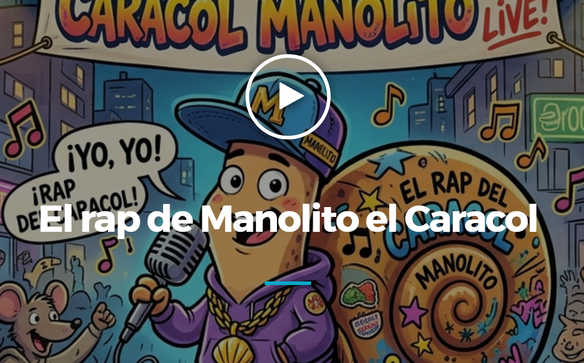
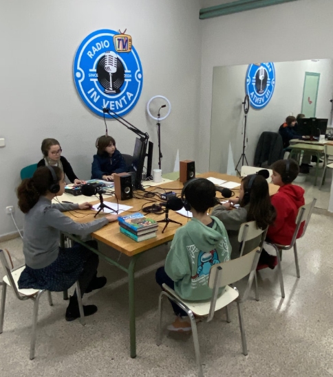
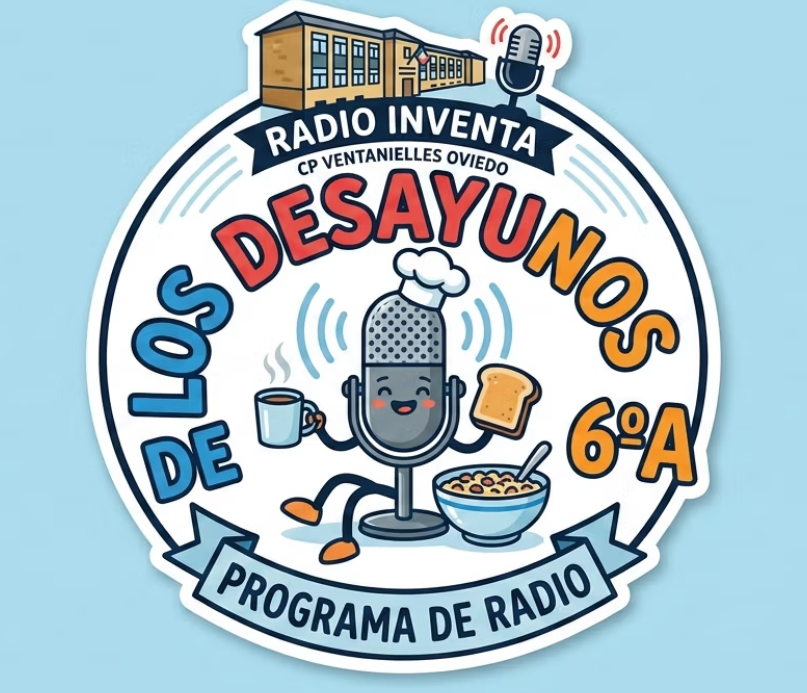
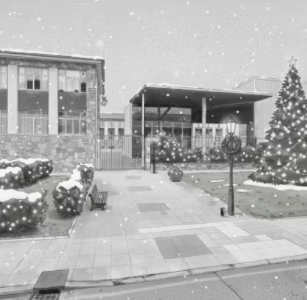

EL RAP DE MANOLITO EL CARACOL

El rap de Manolito el caracol - Radio Educastur

El rap de Manolito el caracol - Radio Educastur

Fomentar el pensamiento crítico, la creatividad, la expresión oral y el trabajo colaborativo en alumnado de altas capacidades mediante la creación y emisión de un programa de radio escolar.
Entretenilandia (Episodio 1) - Radio Educastur

Los desayunos de 6ºA - Radio Educastur

CUENTO DE NAVIDAD 4ºA
VELADAS